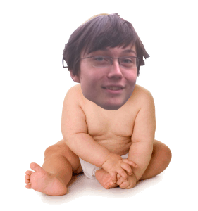

Marc Schäfer ist heute eine der größten Zukunftshoffungen der Österreichischen Politk. Doch das war nicht immer so. Hier erfährt ihr, wie Marc zur der großartigen Person geworden ist, die wir heute kennen.
13. Juli 1997. Noch ahnte noch niemand welch tolles Geschenk das fliegende Spaghettimonster den Menschen gegeben hat. Marc Schäfer, Messias der Neuzeit wurde geboren. Man vermutet, das er in einem italienischen Restaurant vor Unterstinkenbrunn auf die Welt kam.
In seinen ersten Lebensjahren bereitete er sich auf seine großen Taten vor, die vor ihm lagen. Er ließ seinen Körper reifen, und schohnte ihn, um seinen lebenden Körper für die Menschheit zu bewahren.
Mit seinem 6. Lebensjahr begann die Weiterentwicklung seines Geistes. So großartig wie er ist, so bescheiden ist er auch. Trotz seiner unglaublichen Genialität, besuchte er eine reguläre Schule.
Mit seinem 14. Lebensjahr war seine Grundausbildung abgeschlossen, und machte sich auf, um mit seinem Training fortzufahren. Als eine Person höherer Mächte, hatte er die Möglichkeit seinen Aubildungszweig frei zun wählen. Schäfer suchte nach einer Herausforderung. So strebte er das Ziel an der erste Hochbau-Halbgott in der Geschichte der Geschichten zu werden, da er meinte, dass so Österreich am besten geholfen werden könnte. Er musste sich von Freund und Familie trennen, um diesen Weg zu beschreiten. Doch das machte ihm aber nichts aus. Von seiner Selbstlosigkeit überzeugt, wählte er den Weg, der Österreich am meisten Vorteil verschaffen würde.
Nach 3 Semstern beschloss er, auch mal an sich zu denken und kehrte zu seinen Freunden zurück. Blöderweiße ist er kurz danach mit seiner Familie nach Wien ausgewandert, wo er seine Ausbildung fortsetzte. Dabei musste er das wagen, was nur wenige Halbgötter vor ihm gewagt haben. Er hat die Fachrichtung gewechselt und lässt sich nun zum Informatik-Halbgott ausbilden. Dies schwierige Entscheidung hat er mit 2 Semestern Strafausbildungszeit und einem Jahr Verbot von Nudelgerichten büßen müssen. Doch den Zorn der Götter hielt ihn nicht davon ab, seinen Weg als Diener Österreichs weiter zu beschreiten. Er suchte sich Kontakte, ernte und arbeitete hart. Volkommend ohne Bezahlung, schuftete er auf dem Niveau eines Teilzeitangestellten. Doh das machte ihm nichts aus. Denn er wollte ja einzig und allein Österreich dienen.
Nach 2 weiteren Semestern, beschloss er nicht bis zum Ende seiner Ausbildung zu warten. Er kandidierte als Klassensprecher. Allein bei seiner Rede zeigte sich schon seine Überlegenheit gegenüber allen anderen Personen. Schäfer war der einzige SChüler, der eine Powerpoint präsentation vorbereitet hat. Am schluss entscheidete dann nicht die Demokratie, sondern das Schicksal selbst. Ein planloser Mitschüler*, der die schlechteste Rede seit Menschengedenken gehalten hat, hätte mehr Stimmen bekommen, jedoch waren seine Anhänher nicht imstande gültig zu wählen. So war und ist er immer noch unser einzig wahrer Klassensprecher.
Für uns ist er ein Teil unseres Bewusstseins, etwas ohne dem wir nicht leben könnten. Sein politisches engagement hat zu veränderungen geführt, die man sich in einen demokratischen System nur erträumen könnte! Was die Zukunft bringt jedoch, kann nur das Spaghettimonster selbt sagen. Doch Marcs Weg wird sicherlicherlich zu einem schöneren Österreich und zu einer schöneren Welt führen.
*Hey das bin ja ich!